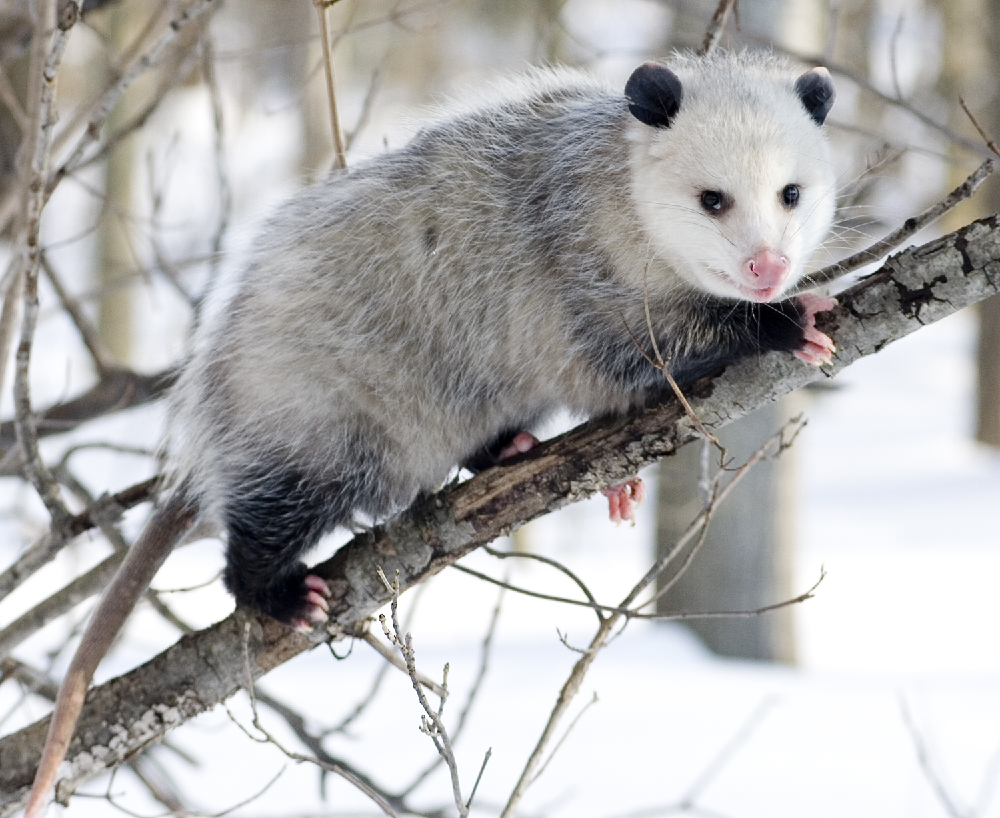
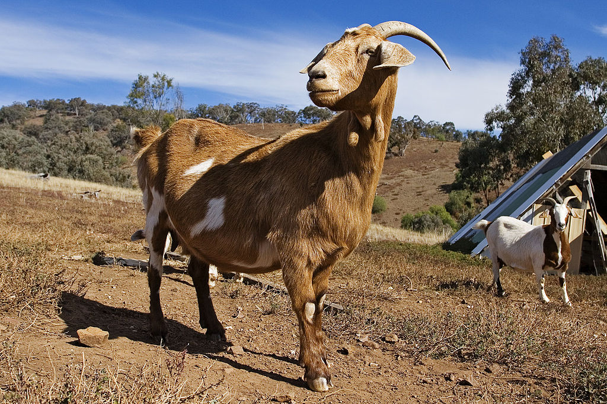
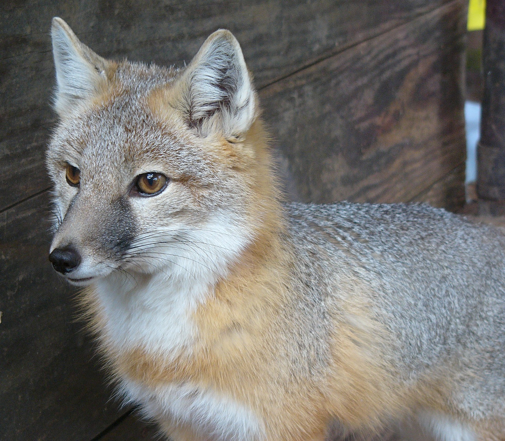
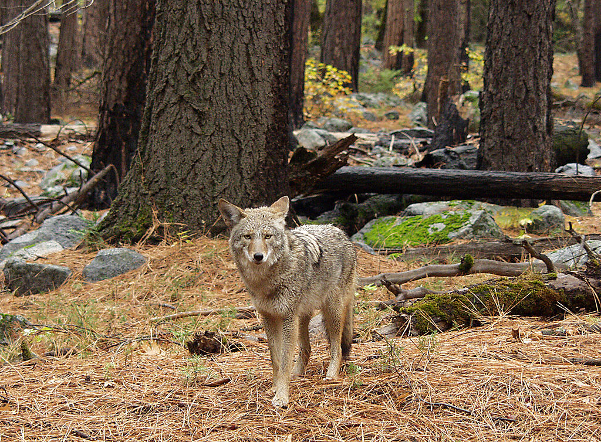
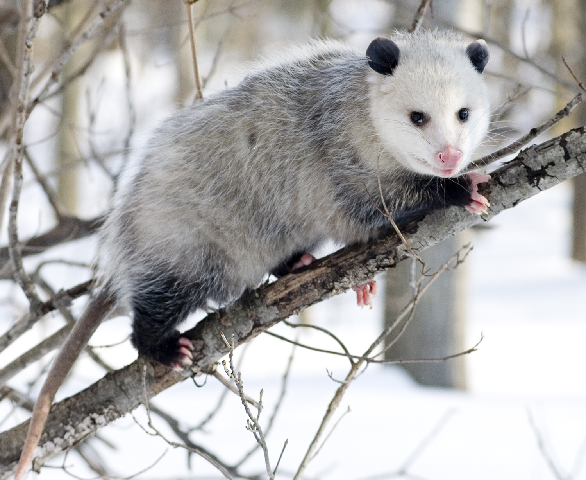
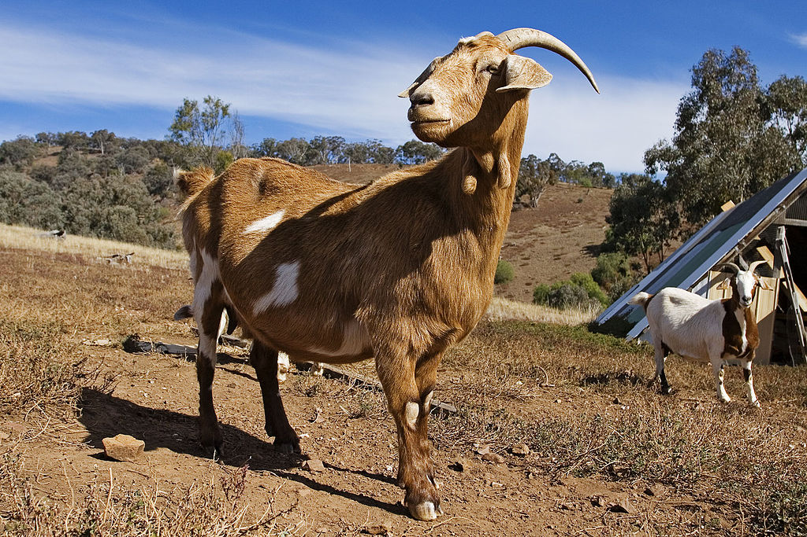
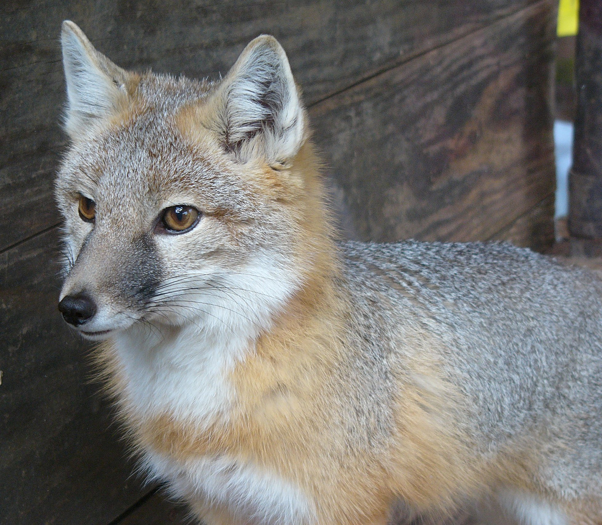
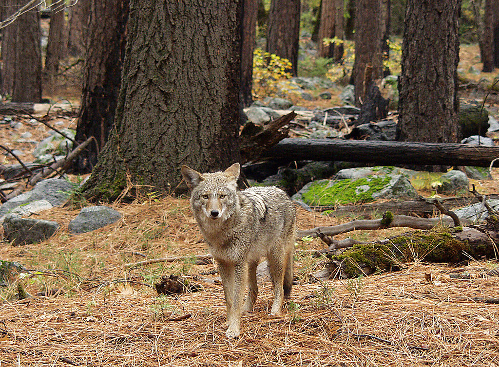

I see some animals like squirrel and racoons in my backyard. I also see some cats crossing by because of birds in my back yard. I found one day that a raccoon came out from the deck and washed his hands in the bird bath. He tried to approach to me for some food. This video shows you my hand feeding a squirrel in my back yard. Because of his rabbit like movement, I call him Hoppy (the first photo from the left). He took many walnuts from me and stored them in many places including the house my husband made for him. I wonder if he forgets the spot he hides food. The rest of 4 photos of animals were seen in our neighorhood. I downloaded them from Wikimedia commons. The first one from the left in the second raw is opossum. I've never seen it, but my husband has. My next door neighor owned two goats to get rid of weeds last summer. One of them broke the fence and got in my back yard. They were really loud. The third one is fox and the last one is coyote. I saw their dead bodies in my neighorhood.


 






